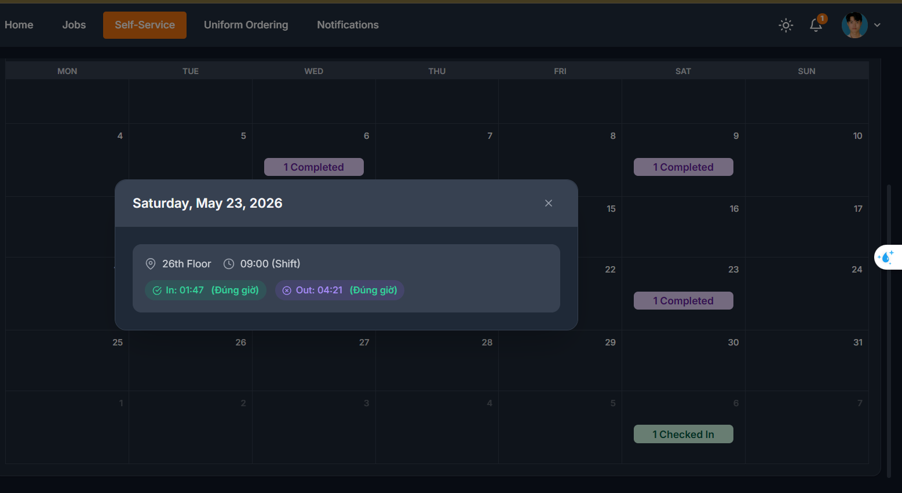
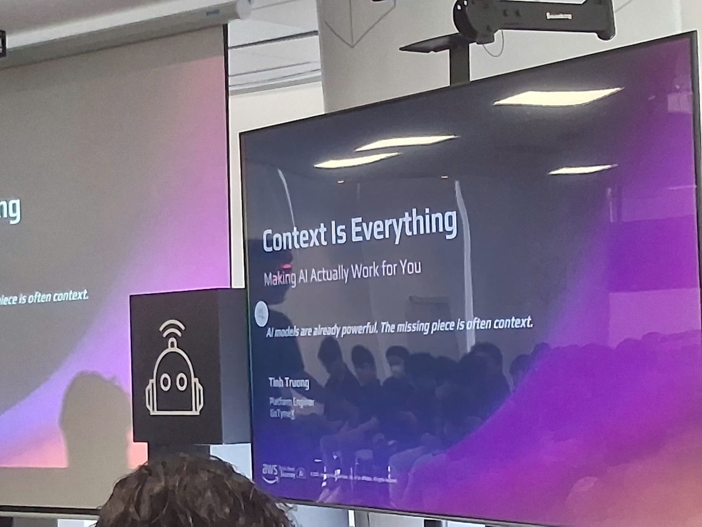
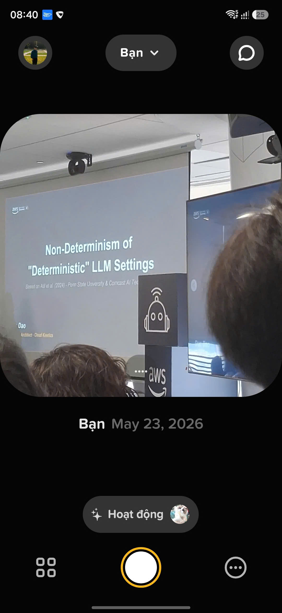

Sự kiện 2
Nội dung sự kiện
Community Day lần hai gồm bảy phần chia sẻ về xu hướng thị trường, kỹ thuật context/prompt AI, demo sản phẩm AWS, kiến trúc CDN, trải nghiệm hackathon, cơ chế hoạt động LLM, và hệ thống multi-agent doanh nghiệp.
Phần 1 – Xu hướng thị trường & Giá trị bản thân (Diễn giả: Anh Hưng)
Anh Hưng chia sẻ về nhu cầu thị trường hiện tại và tương lai:
- Tìm hiểu những nhu cầu đang thay đổi của ngành công nghệ hiện nay và trong những năm tới.
- Tầm quan trọng của việc tạo dựng giá trị bản thân — phát triển các kỹ năng và chuyên môn riêng biệt để tạo lợi thế cạnh tranh.
Phần 2 – Kỹ thuật Context cho AI Prompt (Diễn giả: Anh Tịnh)
Anh Tịnh trình bày các phương pháp viết context AI hiệu quả để tối đa hóa năng suất:
- Cung cấp cho AI đúng context cần thiết — chỉ rõ điều mình muốn, không thêm thông tin dư thừa mà mô hình đã biết.
- Lỗi thường gặp #1: Lấy mọi thứ trên internet rồi đổ vào context — điều này làm giảm chất lượng đầu ra.
- Lỗi thường gặp #2: Nói cho AI những thứ nó đã biết. Đừng giải thích quá rõ ràng — hãy nêu vấn đề cần giải quyết tiếp theo.
- Chia sẻ khuôn mẫu để viết context chuẩn và hiệu quả.
- Giới thiệu Obsidian như “Bộ não AI thứ hai” — sử dụng Obsidian làm hệ thống quản lý kiến thức cá nhân để cung cấp context có cấu trúc cho các công cụ AI.
Phần 3 – Friendly AI Assistant với Amazon Q (Demo AWS)
Demo về hệ sinh thái kết nối nền tảng của AWS cho phép người dùng tự xây dựng sản phẩm AI:
- AWS tạo ra nền tảng kết nối các hệ sinh thái để người dùng có thể tự build sản phẩm.
- Demo 1: Từ một file Excel, AI phân tích insight và tạo agent dựa vào nhu cầu của người dùng.
- Demo 2: Tạo agent tóm tắt nội dung cuộc họp và tự động gửi thông tin cuộc họp đến tất cả người tham gia qua email.
Phần 4 – CloudFront as Your Foundation
Phân tích chuyên sâu về các tính năng mới và mô hình tính phí của Amazon CloudFront:
Mô hình tính phí mới
- Nhóm người dùng mục tiêu: Chủ website nhỏ, người dùng doanh nghiệp, doanh nghiệp đang mở rộng
- Ước tính chi phí dựa trên dự đoán (Prediction estimate)
- Dễ dàng chọn và thay đổi gói dịch vụ
- Gói giá cố định cho CDN + bảo mật
- Chiến lược tiết kiệm chi phí với CloudFront và giảm mức sử dụng
Khả năng bảo mật
- HTTPS support với mã hóa
- Mutual TLS support để xác thực chứng chỉ phía client
- Origin Cloaking với VPC Origin — tạo đường hầm từ CloudFront đi thẳng vào origin
- Origin Cloaking cho Custom Origins — ẩn máy chủ gốc khỏi truy cập trực tiếp
- Viewer Access Control — chặn lưu lượng theo khu vực địa lý
- Content Protection với Signed URL — ngăn chặn sao chép và chia sẻ URL
- Built-in Failover và origin failover cho tính khả dụng cao
Kiến trúc hiệu năng
- Multi-layer caching architecture — gom lưu lượng từ các edge location của CloudFront
- HTTP/3 (QUIC/UDP) multiplexing cho kết nối nhanh hơn
- Persistent connections to origins — không lặp lại TCP handshake, duy trì lưu lượng TCP hiệu quả
- CloudFront Functions — chuyển hướng người dùng đến endpoint theo khu vực
Phần 5 – Build a Product trong 36 giờ với LotusHacks
Diễn giả chia sẻ trải nghiệm hackathon tại LotusHacks:
- Xây dựng ứng dụng cho phép tương tác trực tiếp với các component UI để chỉnh sửa trực tiếp thông qua 3 AI agent.
- Ứng dụng cung cấp tính năng xem lại lịch sử chỉnh sửa, cho phép người dùng xem và hoàn tác các thay đổi trước đó.
- Chia sẻ bài học kinh nghiệm từ cuộc thi xây dựng sản phẩm trong 36 giờ.
Phần 6 – Non-determinism of Deterministic LLM Settings
Phần chia sẻ kỹ thuật về cách LLM hoạt động bên trong:
- Cách LLM tạo văn bản: Mô hình xếp hạng điểm số cho từng từ trong prompt để chọn token phù hợp nhất từ kho từ vựng (vocab) của nó.
- Phương pháp tối ưu inference: Các nhà cung cấp LLM hiện tại sử dụng các phương pháp tối ưu inference để cung cấp gói giá tiết kiệm chi phí mà vẫn duy trì chất lượng đầu ra.
Phần 7 – Hệ thống Multi-Agent cấp doanh nghiệp: Đánh giá tín dụng Startup
Nghiên cứu điển hình về xây dựng hệ thống multi-agent để đánh giá mức độ tín nhiệm của các doanh nghiệp startup:
Vấn đề
- Đánh giá điểm tín dụng cho các doanh nghiệp startup với dữ liệu lịch sử hạn chế.
- Toàn bộ dữ liệu startup hiện có không thể đưa vào các mô hình hiện tại — thách thức là tạo ra kết quả AI đáng tin cậy trong phạm vi ngân sách nhất định.
- Mỗi công cụ sử dụng và mỗi dòng code tạo ra đều phải mang lại giá trị đo lường được.
Kiến trúc Agent
Hệ thống sử dụng Manager agent điều phối các agent chuyên biệt:
- Financial Analyst — đánh giá sức khỏe tài chính
- Market Analyst — phân tích vị thế thị trường
- Team Evaluator — đánh giá năng lực đội ngũ sáng lập
- Risk Assessor — nhận diện rủi ro tiềm ẩn
- Compliance — đảm bảo tuân thủ quy định
Tại sao kiến trúc Multi-Agent hiệu quả
- Chuyên môn hóa — mỗi agent tập trung vào lĩnh vực riêng
- Kiểm tra chéo — các agent xác thực lẫn nhau
- Xử lý song song — nhiều đánh giá chạy đồng thời
- Khả năng kiểm toán — quá trình suy luận của mỗi agent đều có thể truy vết
- Khả năng mở rộng — thêm agent mới khi nhu cầu tăng
- Chịu lỗi — hệ thống vẫn hoạt động ngay cả khi một agent gặp sự cố
Nguyên tắc cốt lõi
Xây dựng hệ thống phải an toàn, tin cậy, và hỗ trợ người dùng.
Bài học rút ra & Đóng góp cá nhân
- Xây dựng thương hiệu cá nhân: Trong thị trường biến đổi nhanh, việc tạo dựng và thể hiện giá trị riêng biệt của bản thân là yếu tố thiết yếu cho sự phát triển nghề nghiệp.
- Context engineering > prompt engineering: Chất lượng đầu ra của AI phụ thuộc rất lớn vào việc cung cấp context tập trung, phù hợp — không chỉ là viết prompt tốt. Tránh giải thích quá mức hoặc đổ vào dữ liệu không liên quan.
- Obsidian như hệ thống kiến thức: Sử dụng cơ sở kiến thức cá nhân có cấu trúc như Obsidian có thể cải thiện đáng kể context cung cấp cho các công cụ AI.
- CloudFront không chỉ là CDN: Mô hình tính phí mới, VPC Origin cloaking, signed URL, và HTTP/3 support biến CloudFront thành một nền tảng bảo mật biên và hiệu năng toàn diện.
- Hệ thống multi-agent cho bài toán phức tạp: Phân rã vấn đề phức tạp (như đánh giá tín dụng) thành các agent chuyên biệt với cơ chế kiểm tra chéo cho kết quả đáng tin cậy và có khả năng kiểm toán cao hơn so với cách tiếp cận AI đơn lẻ.
- Hiểu cơ chế LLM: Hiểu cách token scoring và inference optimization hoạt động giúp đưa ra quyết định tốt hơn khi chọn nhà cung cấp và gói giá.
Hình ảnh sự kiện


